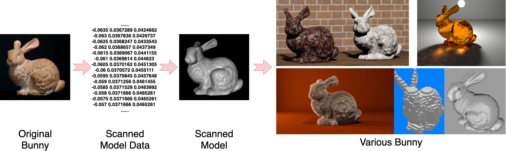
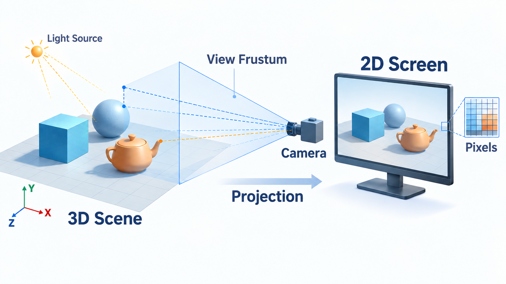
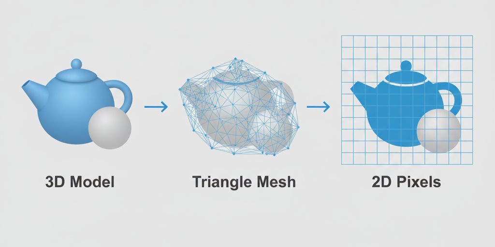
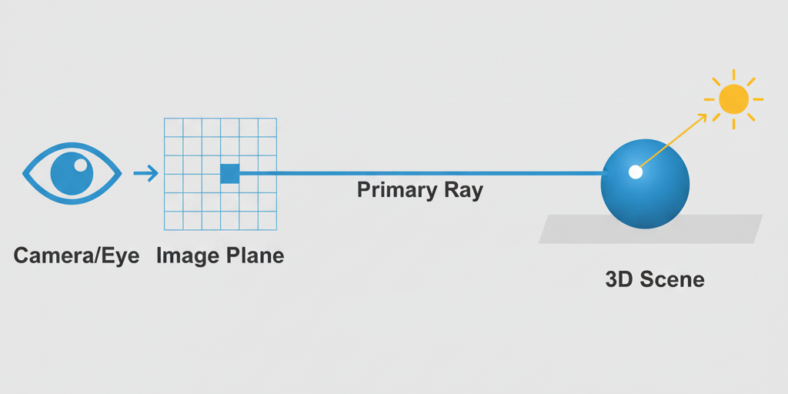

认识计算机图形学：研究对象、图形系统、核心渲染路径与课程内容体系
这些画面背后的共同核心技术是什么？A 图像处理 B AI计算机视觉 D 计算机图形学 E 多种技术共同参与
如何用代码、数学和计算硬件，把一个数字化的对象或场景变成我们能够看到的图像？
这就是本课程贯穿始终的主线：从模型到像素（Model → Pixels）。
怎样把人体结构、医学数据和医学过程转化为医生、学生能够观察和理解的视觉表达？
当三维结构已经得到后，怎样表示、观察、投影、着色并实时显示？
“请用不超过50字解释：什么是计算机图形学？它与计算机视觉有什么区别？”
两人一组：AI回答 → 人工判断 → 教材/可信来源核验 → 形成自己的定义。
图形学研究什么？
模型如何走到屏幕？
光栅化与光追是什么？
后续章节解决什么问题？
研究如何利用计算机生成、处理和显示视觉内容；本课程尤其关注：怎样把数字化的二维/三维对象与场景转化为图像。
核心过程可以先粗略理解为：表示 → 观察 → 计算 → 显示。
科学/医学可视化、地图、数据表达
CAD、建筑、工业设计、数字内容生产
游戏、影视、数字孪生、训练模拟
GUI、触控、VR/AR、空间交互
CT 三维重建、自动驾驶仿真、数字孪生工厂、VR手术训练分别属于哪一类？哪些案例跨越多个类别？

扩展资源：Stanford 3D Scanning Repository · https://graphics.stanford.edu/data/3Dscanrep/
扫描、建模、纹理、输入设备等提供场景数据。
几何处理、可见性、着色、纹理等算法决定“怎样算”。
CPU / GPU 执行计算，帧缓存和显示器呈现结果。
如果只给你 Bunny 的三角网格文件，距离“看到最终效果”还缺什么？
模型、纹理、相机、交互数据
CPU 组织任务，GPU 执行大规模并行图形计算
结果写入帧缓存，再显示为像素阵列
图形学里最典型的计算特征是：对大量顶点和像素执行相似操作。

同一个三维场景，从不同相机位置、不同光照、不同算法观察，为什么会得到不同二维图像？
如果医生改变观察方向、切换投影方式或调整光照，同一个三维器官为什么会呈现出不同的二维图像？这些变化中哪些属于“数据变了”，哪些只是“观察与绘制方式变了”？
物体 → 屏幕
把图元投影到屏幕，确定它覆盖哪些片元。
像素 / 光线 → 场景
从观察方向追踪光线，判断它与场景如何交互。


大量基础可见性仍适合光栅化。
反射、阴影、间接光可由光追补充。
降噪、超分、帧生成降低高质量渲染成本。
120 FPS 手机游戏与单帧可渲染数小时的电影镜头，各自优先考虑什么？为什么今天又不能简单说“游戏=光栅化、电影=光追”？
显式几何 + 图形流水线
如 NeRF：学习场景表示，再从新视角绘制。
显式高斯表示 + 快速新视角渲染。
方法改变了，但共同问题仍是：怎样表示一个场景，并从指定视角生成图像？
贯穿主线：场景如何表示 → 从哪里观察 → 怎样计算颜色 → 如何实时交互
这些内容回答：“怎样把几何问题写成计算机可以高效执行的数学运算？”
点、线、三角形、多边形、曲线与曲面。
坐标、连接关系、几何与拓扑信息。
从单个对象逐步组织成层次化场景。
建模（modeling）解决“对象是什么、怎样表示”；绘制（rendering）解决“给定对象后，怎样生成图像”。
决定从哪里看，以及三维如何映射为二维。
决定哪些表面真正能够被观察者看到。
光照、材质、纹理决定最终视觉效果。
鼠标、键盘、触控、姿态与其他传感输入。
定位、拾取、拖拽、视图控制等。
输入改变场景，系统重新绘制，再反馈给用户。
图形学经常做的事情就是：把结构化的场景信息转化为二维像素图像。
| 领域 | 典型输入 | 核心目标 | 一句话理解 |
|---|---|---|---|
| 计算机图形学 | 模型 / 场景 / 相机 / 光照 | 生成与呈现视觉结果 | “怎样画出来？” |
| 图像处理 | 图像 | 增强、变换、分析图像数据 | “怎样把图处理得更合适？” |
| 计算机视觉 | 图像 / 视频 | 恢复结构、语义与环境信息 | “图里是什么、在哪里？” |
| 生成式 AI | 文本 / 图像 / 多模态条件 | 生成新的图像、视频或3D内容 | “根据条件创造新内容。” |
说明：这是面向入门学习的任务导向区分。现代研究中这些领域大量交叉，例如神经渲染、3D生成和视觉重建。
复杂毛发、间接光、反射与阴影；允许单帧进行较长时间计算。
需要稳定高帧率，对输入立即响应，同时尽可能提高视觉质量。
分别会优先采用哪些技术？为什么？如果采用现代混合渲染，又可以怎样组合？
从数字模型/场景到可显示的图像。
输入/数据 → CPU → API → GPU → 帧缓存 → 显示。
光栅化强调高吞吐；光追更自然描述光的传播；现代系统常混合使用。
基础与数学 → 建模与表示 → 成像与绘制 → 交互与应用。
后续课程将逐个回答：对象怎么表示？怎么变换？从哪里看？怎样着色？如何最终变成像素？
计算机图形学研究的核心问题是：______________________________
再勾选你目前最不确定的概念：模型 / 相机 / 光 / 光栅化 / 光线追踪 / GPU。下一课从最高频问题开始。
下一课：三维世界为什么能够变成二维图像？